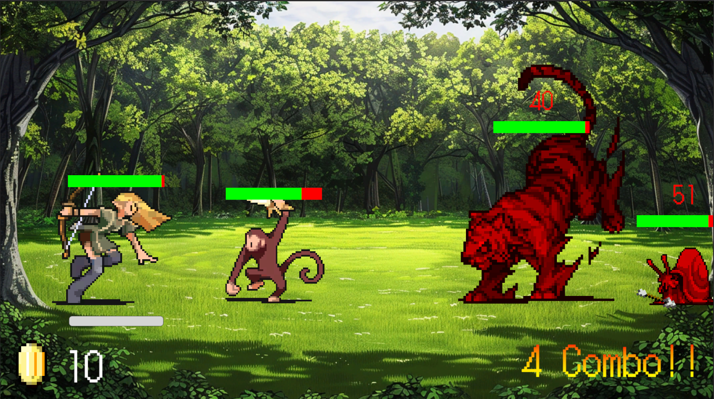
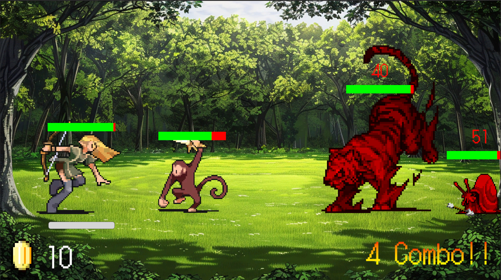

About me
27卒のゲームプログラマーを目指している大学院生です。
普段からUnityでゲームを作って、学園祭で展示したりunityroomに投稿したりしています。
大学では生成AIの応用に関する研究をしています。
趣味はゲームはもちろん、リアル脱出ゲームのような謎解きや、ボードゲームにも目がありません。
Projects
・チーム作品
GROG
「プロトスプリントリーグ」で最優秀賞を受賞しました！
スクリーンショット

プレイ動画
ゲーム説明
スマホの向きを変えることで重力を変化させステージクリアを目指していく、2Dアクションパズルゲームです。
開発期間
2025年12月20日～21日（約11時間）
制作メンバー
3人
担当箇所
企画、レベルデザイン、プレイヤー挙動
制作背景
株式会社サイバーエージェント様のインターン「プロトスプリントリーグ」にて制作しました。
「かえる」というテーマのもと、スマホの向きを"変える"ことで操作するゲームを企画し、制作しました。
-
こだわった点
- ・ステージごとにユーザーに学んで欲しいことを定義し、それを基にステージ構成を決めることで、ユーザーが段階的にゲームの操作を習得できるようなレベルデザインを目指しました。
- ・「ステージをクリアすること自体は簡単であるが、収集要素である王冠を3つ取得しようとすると難しい」というステージ構成にすることで、ユーザーのプレイスタイルに合わせたゲーム体験の提供を目指しました。
- ・重力が変わってもプレイヤーが意図した方向に進むようにプログラムを工夫しました。 具体的には、プレイヤーの座標からタッチした座標へ向かうベクトルとプレイヤーのX軸正方向のベクトルの間の角度をもとに、右に動くか左に動くかを決定しています。
ドリームメーデー
「BitSummit the 13th」で「BitSummit GAME JAM AWARD」を受賞しました！
スクリーンショット
トレーラー
「にぶちゃんねる」様にて紹介されました！
ゲーム説明
球体型の特殊モニターを用いる2人専用の協力ゲームです。
プレイヤーは夢側と現実側に分かれ、夢に起きる異変を協力して解決していきます。
開発期間
2025年4月～7月
制作メンバー
10人（プランナー：3人、プログラマー：4人、デザイナー：3人）
役割
リードプログラマー
担当箇所
モック版作成、現実シーン作成、現実と夢の相互作用システム実装
制作背景
本作は「BitSummit Game Jam」という企画の中でチーム開発された作品です。
テーマである「妖×妙」に沿って、夢に関連したゲームを作ろうと考え、夢と現実という2つの世界をそれぞれ異なるモニターで表現しました。
そのうち、夢の世界を象徴するモニターとして、球体型の特殊モニターを採用しています。
-
こだわった点
- ・ソースコードに適宜コメントアウトをして、読みやすいコードを心掛けました。
- ・オブジェクトの描画順を動的に変更することで、2Dでありながらも奥行きがあるように見せています。
- ・部屋の割り当てをゲーム起動時に毎回ランダムに設定することで、何度でも楽しめるような工夫をしています。ドアと遷移先の対応を変更することで実現しています。
- ・タグやトリガー（非接触の当たり判定）を使い分けることで、複数の当たり判定を同時に処理できるようにしています。
・個人作品
一矢当千（いっしとうせん）
スクリーンショット
 

プレイ動画
ゲーム説明
エルフとなり弓を引いて森を守る「シューティング×ローグライク×タワーディフェンス」ゲームです。
買い物による能力強化と戦闘を交互に繰り返します。
最後のウェーブにやって来るボスを倒すとゲームクリアです！
開発期間
2025年8月4日～11日（約50時間）
制作メンバー
1人
制作背景
Unity1週間ゲームジャム お題「ひく」への投稿作品として制作しました。短期間で完成度の高いゲームを制作するスキルを磨くことを目的としました。
-
こだわった点
- ・「敵を"引き"つけて一気に貫く爽快感」を実現するために、攻撃ヒット時の音の高さをコンボ数に応じて高くするシステムや、ヒットストップを実装しました。
- ・敵の実装では、Enemyという汎用クラスを作り、そこから適宜派生させていくクラス設計をしました。これにより、仕様の追加や変更が容易になりました。
- ・ゲームシステムのスクリプトを機能ごとに分けることで、可読性や保守性を確保しました。
- ・ステージ構成やキャラクターのパラメータを調整しやすいように、インスペクターから変更できるようにしました。
- ・複数の強化パラメータを用意することで、プレイに戦略性を持たせました。
Goggle.dino
スクリーンショット
プレイ動画
ゲーム説明
Google Chromeの「chrome://dino」をオマージュした2Dランゲームです。障害物をよけ続けてハイスコアを目指します。
本家との違いは、時間が経つと視界がぼやけて画面にモザイクがかかるという点です。
モザイクは瞬きをすることで元に戻ります。
「瞬きをすると画面が見えなくなってしまうが、放置しても画面が見えづらい」というジレンマにどう対処していくか、というのがこのゲーム独自の面白さになっています。
開発期間
2025年4月13日～20日（約50時間）
制作メンバー
1人
制作背景
Unity1週間ゲームジャム お題「あい」への投稿作品として制作しました。短期間で完成度の高いゲームを制作するスキルを磨くことを目的としました。
-
こだわった点
- ・操作やルールが複雑なため、チュートリアルを工夫しました。具体的には、操作やゲームルール、画面UIを段階的に一つずつ説明していくことで、理解しやすいチュートリアルを心掛けました。
- ・ゲームが上手い人だとモザイクがかかった状態でも簡単にプレイできてしまうということを考慮して、モザイクがかかった状態だとスコア倍率に補正をかけるようにし、瞬きをする意味を持たせました。これにより意図したゲーム性になったと考えています。
- ・プレイしてくれた友人から「目がチカチカする」という意見を頂いたので、瞬きの画面の色を黒からグレーへと変更することで、プレイヤーへの負担を軽減しました。
- ・unityroomのランキングをハイスコアランキングと走行距離ランキングの2つを用意することによって、「ハイスコアを狙うか、堅実に距離を稼ぐか」という戦略性が生まれ、ゲームプレイの奥深さを実現しました。
- ・当たり判定を実際の大きさよりわずかに小さくし、プレイヤーに理不尽さを感じさせない工夫をしました。
リンク
unityroom
JAPANESE PANCAKES
スクリーンショット
プレイ動画
ゲーム説明
真夏の日本でパンケーキを焼くゲームです。マウス操作でフライパンを傾けて、パンケーキを焦がさないように焼き、制限時間内にスコアを稼ぎます。
パンケーキをひっくり返すと加点（半回転：100点、1回転：500点、1回転半：2000点）、焦がしたり落としたりすると減点されます。
開発期間
2024年8月11日～21日（約50時間）
制作メンバー
1人
制作背景
Unity1週間ゲームジャム お題「かえす」への投稿作品として制作しました。短期間で完成度の高いゲームを制作するスキルを磨くことを目的としました。また、初めての3Dゲーム制作に挑戦しました。
-
こだわった点
- ・ゲーム中に登場するセミやフライパンはBlenderを用いて作成しました。
- ・スコアに応じてエンディングが変化するマルチエンディングを実装しました。また、unityroomにてスコアランキングを実装しました。これにより、プレイヤーに目的意識を与え、ゲーム体験を向上させました。
- ・マウス感度やX軸反転、Y軸反転を好みに応じて設定できるようにしました。
- ・時間経過に応じて背景やパンケーキの色（焼き加減）が変化するようにしました。
リンク
unityroom
アイアムマン
スクリーンショット
プレイ動画
ゲーム説明
2D物理アクションゲームです。
鉄のスーツを着た男を操作し、ゴール地点を目指します。
手足からのガス噴射を調整して姿勢を制御し、ゴール地点に5秒以上静止することでステージクリアとなります。
開発期間
2022年2月～4月
制作メンバー
1人
制作背景
コンピュータサークル入部1年の節目に新入生歓迎用のゲームとして制作しました。
Unityの基礎を身に着けることを目標としました。
-
こだわった点
- ・ミスした際に自動的にリスタートするようにし、スムーズなゲーム体験を実現しました。
リンク
unityroom
Skills
| 言語・ツール | 使用年数 | 詳細 |
|---|---|---|
| C | 1年 | 配列、ポインタ、ファイル処理などの基礎的な操作ができる。 |
| C++ | 9ヶ月 | Atcoderで勉強中。茶色レート。C問題が大体解ける。 |
| C# | 3年 | Unityで使用。アルゴリズム関連は初心者レベル。MonoBehaviourを用いた処理は中級者レベル。 |
| Python | 2年 | 機械学習やデータ処理などができる。リファレンスを参照しながら任意のプログラムを実装できる。 |
| Linux | 1年 | シェルスクリプトからプログラムを動かすことができる。 |
| Git | 1年 | Gitを用いたチーム開発経験あり。基本的なブランチ操作などができる。 |
| Docker | 3ヶ月 | Dockerfileの作成、イメージ作成、コンテナ作成などができる。 |
| Unity | 3年 | 2D/3Dゲーム開発経験あり。チーム開発経験あり。基本的な仕様が実装できる。 |
| Blender | 1週間 | 簡単な3Dモデルを作ることができる。 |
| Live2D | 1週間 | メッシュ割りと表情遷移が実装できる。 |